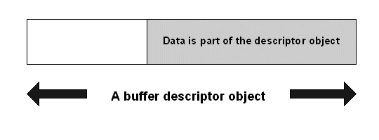
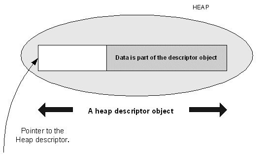
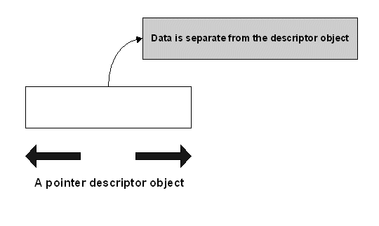

|
| |
Descriptors provide a safe, consistent and economical mechanism for accessing and manipulating strings and general binary data.
A descriptor represents data which can reside in any memory location, either ROM or RAM. A descriptor object maintains pointer and length information to describe the data. All access to the data is made through the descriptor object.
The area occupied by data represented by a given descriptor is considered to be non-expandable, even though the length of data represented can shrink or expand to fill that area.
The set of operations which can be performed on data represented by a descriptor is divided into those that can modify the data and those which provide access but do not modify the data. This split is reflected in the structure of the descriptor classes.
Operations on data represented by a descriptor are safe. Accidental or deliberate attempts to access memory outside the data area represented by a descriptor are caught. An illegal access is treated as bad programming rather than an environment or resource problem and raises an exception known as a panic.
Descriptors make no distinction between the type of data represented; both strings and binary data are treated in the same way. Although some operations on a descriptor are intended to operate on a string, they also work on binary data. This unifies the handling of both strings and binary data and increases efficiency by allowing code to be shared. This also means that data can consist of a mix of string data and binary data.
The concrete descriptors that programs create come in three types:
Buffer descriptors - where the data is part of the descriptor object and the descriptor object lives on the program stack.
Heap descriptors - where the data is part of the descriptor object and the descriptor object lives on the heap.
Pointer descriptors - where the descriptor object is separate from the data it represents.



Although the three types seem to be different, the underlying class structure makes such differences transparent allowing them to be treated in the same way.
Descriptor objects generally, behave as built-in types,as they can be safely created on the program stack and can also be safely orphaned. The heap descriptor is an exception to this rule.
The design also avoids the memory overhead associated with virtual functions.
Copyright ©2002 Symbian Ltd. 6.1-00174 |
|